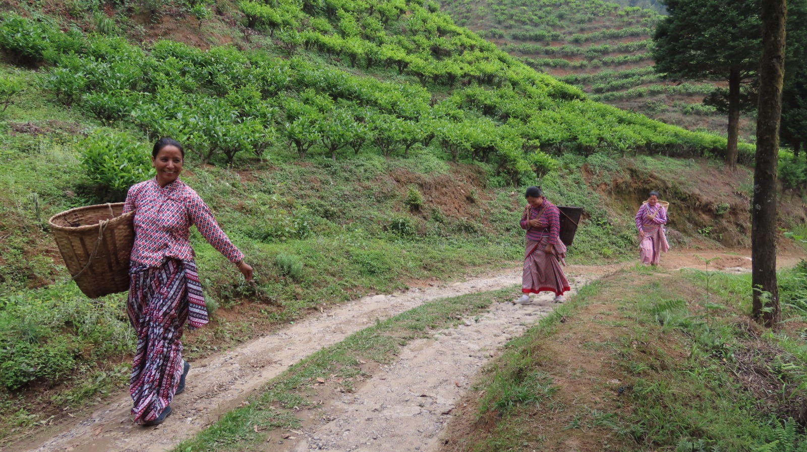

Awareness that lasts
Building understanding among communities, stakeholders, and policymakers about protecting the Himalaya's physical and biological systems.
From the rhododendron forests of Sandakphu to the tea gardens of Darjeeling, we work for a mountain where human ambition and the natural world can grow together.
FOSEP envisions a landscape where human aspirations and nature thrive together — creating resilient ecosystems that support biodiversity, ecological balance, and a meaningful quality of life for all beings. We pursue it through three lasting commitments.
Building understanding among communities, stakeholders, and policymakers about protecting the Himalaya's physical and biological systems.
Designing location-specific models that secure health and livelihoods without disturbing the environment that sustains them.
Working toward social and economic justice, gender equity, and the fair sharing of natural resources across the hills.
Read these like altitude markers on a climb — points reached, with more ridgeline ahead.
Indira Priyadarshini Vriksha Mitra Award, Government of India
Anirudh Bhargawa Environment Award, INTACH New Delhi
Regional Resource Agency for NEAC, Ministry of Environment & Forests
Zones served — Darjeeling Hills & Siliguri
Conservation, health, and resilience — carried out alongside tea-garden communities and Gram Panchayats across the region.
Protecting endemic species and fragile habitats across the Kanchenjunga landscape.
Free check-ups, HIV screening, and anti-rabies drives in underserved communities.
A decade of youth-focused campaigns reducing tobacco use across the hills.
Afforestation including rhododendron planting at Sandakphu with SSB partners.
Landslide response and readiness in the region's most vulnerable slopes.
Household latrine construction under Swachh Bharat Abhiyan.
Food security awareness, gender mainstreaming, and rights-based partnerships.
Garbage collection and site restoration across plantations and panchayats.

One of the most biodiverse and fragile regions on Earth — home to globally threatened plants, animals, and birds, and to communities whose lives are woven into the mountain.
Become a member, volunteer for a camp, or support a plantation. Every hand on the mountain matters.